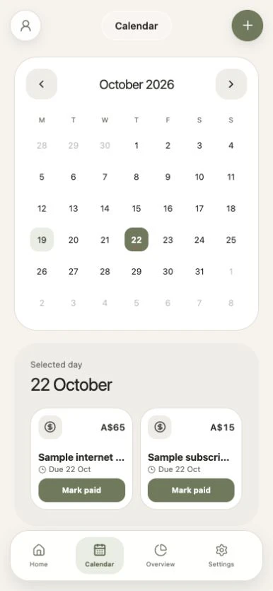
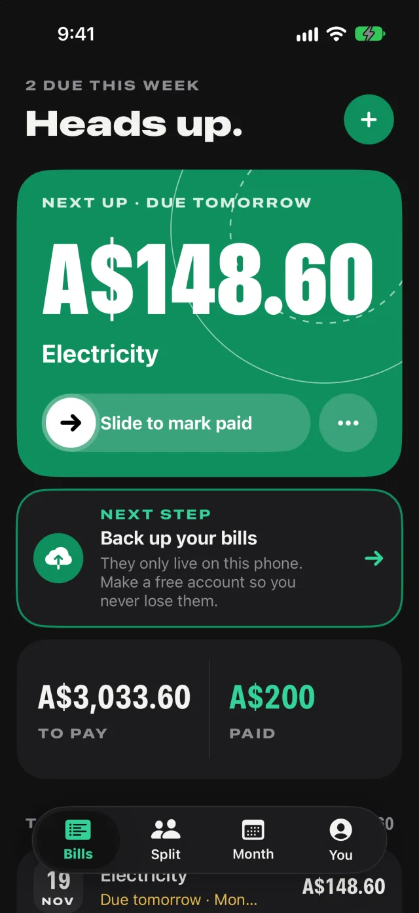

The task
Keep recurring bills, payment history and shared costs in one place without making everyday actions hard to find.
I designed and built a bill-tracking app around three questions: what's due, when is it due, and has it been paid?


Keep recurring bills, payment history and shared costs in one place without making everyday actions hard to find.
Four-tab navigation, bill cards, a due-date calendar and distinct states for bills and shared balances.
The interface, recurring-bill logic, sign-in and stored records. An iOS build is in internal TestFlight testing.
Home shows bills and their due dates. Each card keeps its payment action in the same place. Marking a bill paid records the payment and creates the next recurring bill once. Paidly records balances; it doesn't move money.
Bill tracker
2 upcoming bills
Due 22 Oct
Due 22 Oct
No bills here yet.
A web recreation of the bill flow, not the shipped app.
I cut six navigation items to four: Home, Calendar, Overview and Settings. Payment history lives in Settings instead of taking a tab.
Bill cards reserve space for the payment button. I adjusted long titles, dates and spacing after checking narrow layouts at 320 and 390 pixels.
Bill markers sit inside each date cell without moving the date number. Selecting a date shows its bills below the calendar.
Paying a bill to a company is different from friends settling a shared balance. The two stay separate so one action never implies the other.
I designed the flows, built the reusable UI and implemented it. Layout checks caught a header covering content and cramped card actions.
Syncing splits between two accounts and alerts on physical devices. This is a working design in internal testing, not a measured user outcome.
TypeScript · React Native · Expo · Supabase · PostgreSQL